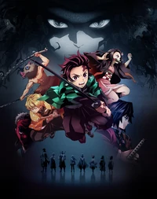
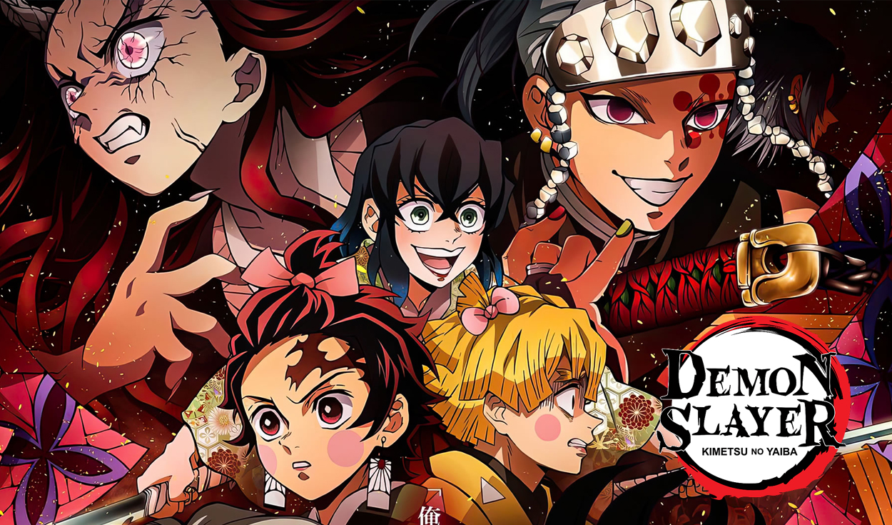

Kimetsu no Yaiba -"Demon Slayer"
Tanjiro Kamado es un joven de una aldea pobre el cual tras la muerte de su padre,su vida sufre un cambio radical cuando al volver a casa luego de un día de trabajo, ve a toda su familia asesinada y su hermana menor, Nezuko siendo la única sobreviviente del ataque. Tanjiro acude a buscar ayuda pero Nezuko despierta e inesperadamente lo ataca revelándose que ha sido convertida en un Demonio. Tanjiro se une entonces decide emprender un viaje para localizar al responsable de la muerte de su familia y al mismo tiempo, encontrar la forma de devolverle a Nezuko su humanidad.

Kimetsu no Yaiba
Género: Acción, Fantasía
Productora: Ufotable
Distribuidora: Selecta Vision
Director: Haruo Sotozaki
Guionista: Koyoharu Gotōge (mangaka)
¿Cual es la emision actual de kimetsu no yaiba ?
Esperando el estreno de la tercera temporada a partir de abril de 2023
¿En qué orden hay que ver el anime de Kimetsu no Yaiba?
Temporada 1
"Kimetsu no Yaiba" debutó de la mano de ufotable en anime durante 2019, con una primera temporada que contó con un total de 26 episodios
Pelicula-"El Tren del Infinito"
Temporada 2 - El distrito Rojo
Esta temporada del anime se emitió originalmente en un compendio especial en el que se introdujeron los hechos de la película del Tren Infinito como precuela al Distrito del Entretenimiento. En cualquier caso, la temporada por sí sola cuenta con esos 11 episodios previamente destacados, ni más ni menos.

Película del arco del Distrito Rojo + la Aldea del Herrero (Nexo Temporadas 2 y 3)
"Kimetsu no Yaiba" lo reventó en taquilla con El Tren Infinito y, lógicamente, sabiendo eso al final 2023 se convierte en un año en el que se vuelve a llevar a Tanjiro y compañía a las salas. La película, asimismo, actúa de nexo entre las temporadas 2 y 3 y, a su vez, de estreno para esta última.

En la película se incluyen los dos últimos episodios (10 y 11) del arco del Distrinto del Entretenimiento además del primer episodio del arco de la Aldea del Herrero, que cuenta con una duración especial de 1 hora.